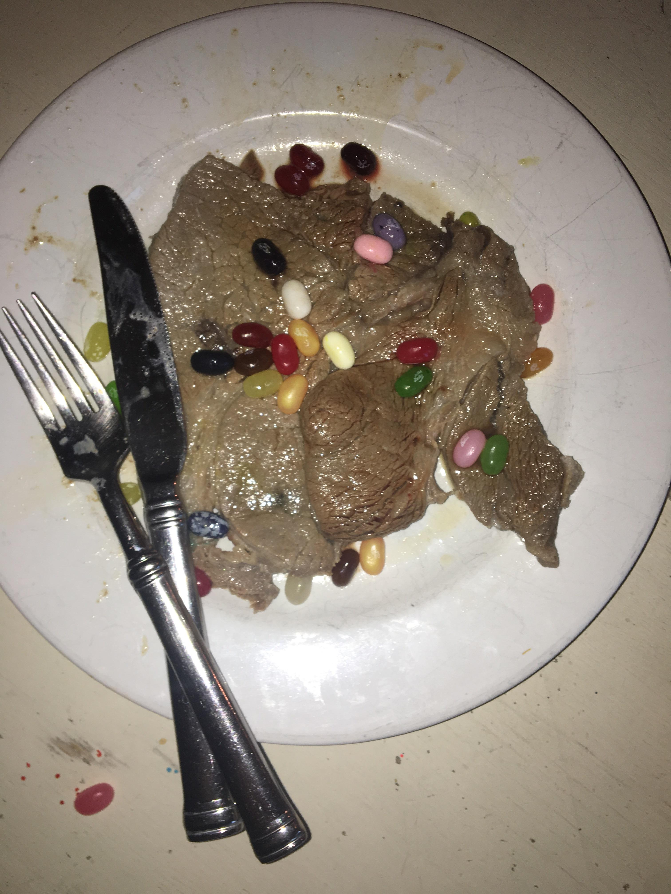

Charlie's Milk Steak

A scrumptious steak dinner, best served with free-range jelly beans
The preferred meal of Charlie Kelly, from "It's Always Sunny in Philidelphia".
Only the finest cuts of beef should be used, and is delicious when served immediately, or after fermenting in the trash for a week.
Ingredients
- Beef cut of choice (Wagyu or Kobe is ideal)
- Cow milk, fresh and unpasteurized
- (Optional) Free range, cruelty-free jelly beans
Recipe instructions
- Bring fresh milk to a roaring boil
- Tear apart beef into palatable chunks with your hands
- Immediately pour beef chunks into boiling milk
- Let beef boil for at least 18 hours, until boiled over hard
- Remove beef from milk, and serve on your finest china with a side of raw jelly beans
Return to top Return to main page